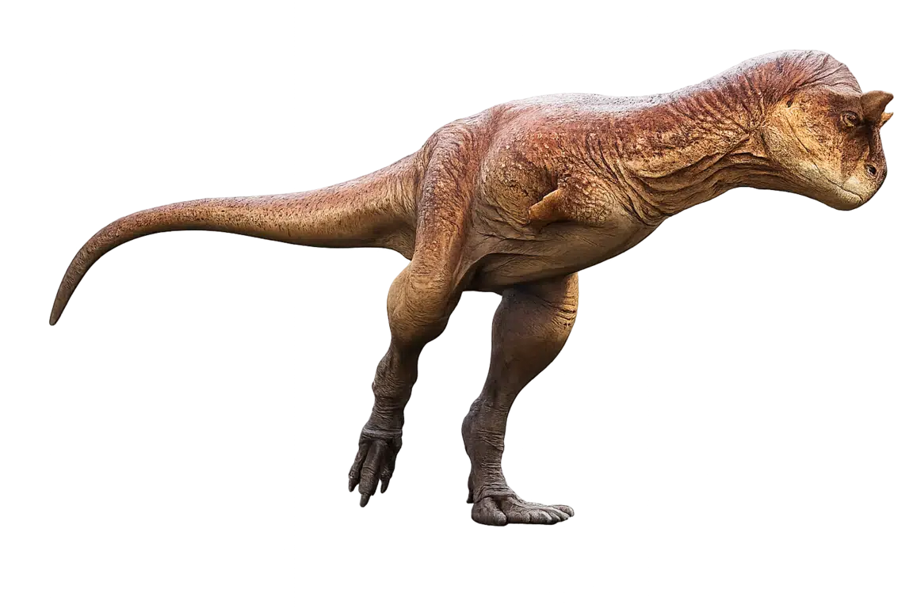

Carnotaurus
Toro Carnívoro
Terópodo/Abelisauridae
Dinosaurio carnívoro ubicado en la Patagonia Argentina.
El Carnotaurus fue catalogado en el año 1985 y vivió hace 75 millones de años. Carnívoro de tamaño medio, poseía unos cuernos similares a los de un toro. Probablemente embestá a sus víctimas. Se cree que el Carnotaurus resistía grandes fuerzas con su cráneo, tales como las producidas por impactos de alta velocidad sobre sus presas. Esta era su estrategia de caza.
Altura: 3,5m
longitud: 9m
Peso: 2000Kg
velocidad: 40Km/h
periodo: Cretácico superior
Especímenes: 1
